The Stand at Klamath Falls
Report Number Five - Freedom Day
By: Jeff Head, August 23, 2001
Tuesday, August 21st, was another beautiful day, a day everyone who was gathered with us in Klamath was excied about, and a day that we felt sure that thousands of travelers were excited about. We were not to be disappointed.
My son, Jared, and I got up and had breakfast. We spoke briefly with Bill Jasper of the New American magazine who had arrived late the night before as we were completing our report from yesterday. Then we ate another great breakfast provided by those wonderful cooks who were feeding any and every one who came to help.
Soon after this, it was time to go over to downtown Klamath and meet and be a part of the parade/procession of convoys coming to the Courthouse to deliver the large bucket. We determined we would meet up with the horse riders who would be leading the parade. It seems, in an effort to reduce congestion, and perhaps to hold down the numbers coming into downtown, the city had agreed to a permit of opny ten vehicles. We knew hundreds would be coming in with donations who would want to be a part. These folks, in the same menner that they had applied throughout this crisis, figured out how to get more people in the parade ... nothing was said by the city about how many horses could be in the parade!
So, Jared and I met the calvary detachment of the Bucket Brigade over in Veteran's Park right near downtown. We then walked with them over to sprin street where we were to meet the convoys coming up 6th street. As we met, and the parade formed, I was impressed. There were close to, if not over 100 riders and Jared and I were placed near the middle where we could view the riders in front and behind.
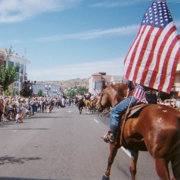
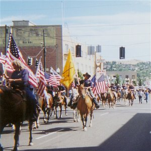
One of the trucks in the convoy was carrying the large Shovel from the Shovel Brigade in Jarbidge, NV. Jared and I had attended that demonstration on July 4th, 2000 when we opened the road in Jarbidge that had been closed by the federal government. In addition, I snapped a picture of the "Politicians Vehicle" which was trailing the riders. This respected and aptly named vehicle was being useed for a special political purpose. It was the cart in which all of the horse excrement that fell on the road was being piled.
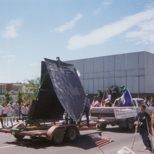
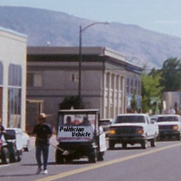
As we proceeded for several block up 6th street, the numbers of people lining the road were fairly sparse, perhaps as many as 200-300. However, as we turned onto main street for the five or six block run down to the court house this changed dramatically. To our left and right were now literally hundreds of people in each block, thousands all together lining the road to the courthouse.
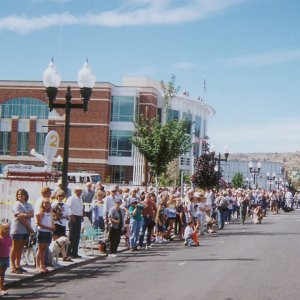
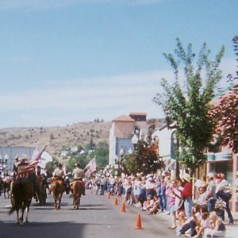
The people were cheering and waving. New reporters became more and more evident. I started trying to get the chant "Keep the Water on!" going and as I did so a reporter with a video camera came up and asked me if I had a message for the administration and the government. I replied,
"Yes, I hope President Bush is watching this from the comfort of his ranch in Texas. I hope he will remember the people of Klamath Basin, these farmers and ranchers who helped put him in office. I hope he will come here and help them by resolving this crisis."
I didn't know it at the time, but that clip was later to be aired on CNN several times.
When we arrived at the courthouse, the crowd was very large. The court house and the court house annex sit right across main street from each other. They have fairly large common areas in front of each which makes for a large open area. In this area, up on the steps of each building and all long the road were now ammassed perhaps 3000-4000 people. They cheered loudly as the convoy came up behind the riders, particularly as the bucket came up. The chant of "Turn the water on!", and "Keep the water on!" began in ernest now.
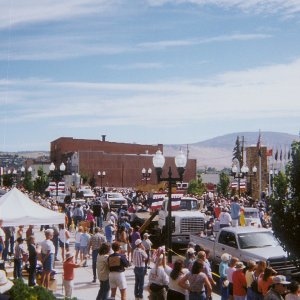
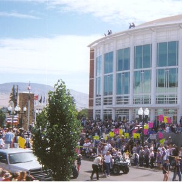
As the large bucket was pulled in front of the court house annex, a large crane began to pick it up and move it. It was lifted ever so carefully and ever so slowly off its truck and moved to the sidewalk in front of the steps. When in place, it was lowered in its heavy metal carrier frame onto the sidewalk where it will stay as a rememberance of the fight we are waging for liberty and our rights in the Klamath Basin.
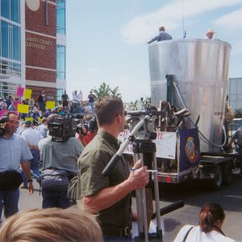
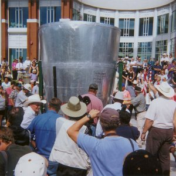
Once this awesome token of our commitment and the fight for water rights was in place, speakers made their way to a podium that had been set up. Bill Branson, one of the organizers of the relief effort, along with Bill Oeddings and Joe Bair gave GREAT speeches which epitomized the effort. They made it clear that the battle was going to be waged relentlessly until a successful conclusion was achieved. They thanksed, by state, the many people who had come to help. The press was all over these specches.
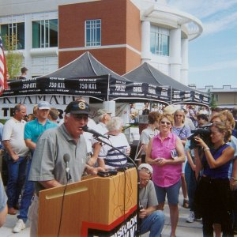
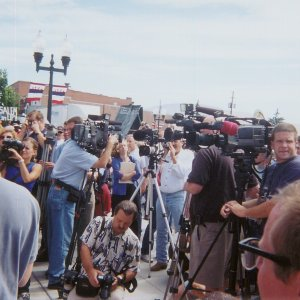
The county commissioners and several local business men spoke. Clearly this event had caused some of the commissioners, who had not been very supportive of the headgate activities and who had distanced themselves somewhat from it in the past, to recognize the fruit of those dedicated efforts. They spoke highly now of those efforts and dedicated themselves to this fight in a more forthright way. This si absolutely necessary for ultimate success.
After these speeches, the events retired to the fairgrounds. Before we went, myself and Jared were photographed infront of the bucket along with a local man, Lonnie, whom we had come to know over the last several weeks and who was helping with the events that day.
At the fairground, approximately five thousand people were present. Many GREAT speeches were given. A young girl sang a song she wrote about the anonymous individual who first opened the headgates in late June that started the events rolling that had led today. Such commitment, such willingness to spit in the tyrants eye and disobey uncosntitutional and immoral laws are required to maintain liberty. That song was a GREAT, heartfelt utterance to that prinsiple and sentiment. This girl sang beautifully and delivered a message through song that can penetrate to the heart. The good Lord is at work in this, and no unhallowed hand can thwart it. That action and its impact on this girl's heart which produced this song are the types of things that no thinktank, no spinmeister, no power monger can account for or plan for.
Helen Chenowith-Hage gave the closing speech. It was a fiery, hard hitting one that revealed the real agenda of control and marxist ideology behind these efforts. Sadly, Jared and I could only listen to this speech and read it later. We had to leave just before it sytarted for our 7-8 hour drive back home. Our hearts and our minds are with these people and we are committed to help them see victory in this struggle and make it a template for similar victories all across our nation in the future. Here is the transcript of Helen Chenowith-Hages speech:
HELEN CHENOWETH – HAGE AT KLAMATH FALLS August 21, 2001
Thank you so much. God it’s great to be back here. A few of you know I was raised in Grant’s Pass Oregon so I have webbed feet and I can identify. About two years ago I married my hero. And he’s here and I’d like to introduce him, Wayne Hage.
Well, we’re in a war, aren’t we folks? You know back at the turn of the century, a hundred years ago the government said, "Go west young man, go west." And we believed our government. After all it was that same government that brought us through the war of independence. Where just a few gathered initially in Samuel Adams cabin to plan the revolution, thirteen people, that was all. And they won the war of independence. Freedom. Freedom is still the issue. Then we went through the Civil War. Although some of my friends from the south say that it wasn’t at all civil. But the fact is we went through some bloody wars in this country. After the turn of the century the government promised to our veterans who were victorious, after World War I, "Come west young man, come west. Come to the Klamath Basin. Come to settle the west. We will work out a system where we will loan you the ability to have water and land you pay back on the note (which our farmers and ranchers have done Bureau of Reclamation projects.) We will give you every opportunity to settle the west because we as a country need to have our country settled from shining sea to shining sea." And so to the veterans went the prize. And veterans after they fought for us and came to victories in World War I and World War II came in to the Klamath Basin and continued to settle after the Czechs and the Irish and the Indians had settled here first. This beautiful land became known as the Klamath Basin.
The Klamath Basin flows about 1.2 million acre feet of water a year and only 30% or 400,000 acre feet goes to the farmers, the ranchers, the wildlife refuge and to the homeowners who irrigate off of this system. But you know what? They want it all don’t they? They want it all. And as the Wall Street Journal says this is a rural cleansing. And I can tell you ladies and gentlemen that it is not just happening here in Klamath Basin. It’s happening all over the west. My husband was the first rancher in the west to have his cattle taken by the federal government. And sold illegally and they kept the money, by the way. Just last week, two weeks ago, our neighbor had his cattle taken off his private property. And we were able to stop the BLM and the sale of those cattle. So we are beginning to win. Step by step together. And I was so intrigued by Holly Swanson’s comments; I’ve been intrigued by all the comments by all the speakers today. But I was intrigued by her comments because she described what’s really behind this. But in addition to Holly’s comments I want to say this, I remember Watergate. And I remember deep throat saying to Woodward, "That what’s really behind this is you just follow the money." And let me tell you it hasn’t changed from what those famous words of Theodore Roosevelt were that it really is the monopolists that are really behind this. I’m not inclined to be a conspiracy theorist person but the fact is once we’re removed from the land, who will have the land? The fact is when you read Raul Arnold’s book, "Undue Influence," you find out who is giving to nature conservancy and the Sierra Club and the Oregon Environmental Council. You find out who these people are. You follow the money and you will be able to identify the problem. The fact is that we’re at war with a group of individuals who really are using government and the environmental movement to further their ends. And the fact is we need to begin to recognize what we’re up against.
You know Thomas Sowell is one of my favorite authors. And it was Thomas Sowell who wrote, in the Wall Street Journal, with regards to the environmentalists who are carrying the water in these issues and happily doing so they are very well funded. He wrote of those people, "Too often we find the notion that the shrill and self righteous people who push this stuff are some kind of noble crusaders. Thinking only of higher things." Sowell went on to write, "Instead of as the selfish and arrogant bigots and bullies that they really are, the essence of bigotry is claiming for yourself the rights that you would deny to others." And the green bigots who call themselves environmentalists do this all the time. And that is the case but the fact is what is so neat about what is happening here today and what has happened in the Klamath Basin is finally in the west we’re beginning to come together.
As I look out across this audience I see my friends like (garbled), and Jack Streeter, and a lot of my friends from even northern Idaho who have come in from Idaho. Julie Smithson who came all the way from Darby, Ohio for this fight. She’s a real hero. That’s the fight back there where the federal government is trying to push a group of farmers, who are Amish by the way, who’s farms are beautifully manicured all the way to the pavement on the road. Beautiful. Trying to push them off their land. Finally America is waking up and saying, "No!" They are drawing a line in the sand and like the farmers at Concord, who said, "We knew when they came to take our guns we knew they aimed to take our freedom. So we stood up and fought." And now when Americans are saying across this nation, even as far back as Darby, Ohio, "When they came to take our water, when they came to take away our land we knew they aimed to take away our freedom that it’s time to fight." And that’s what’s happening.
You know that we may not always be politically correct. In fact I am totally amazed, when I lived in Grant’s Pass we had these sucker fish that were in our irrigation ditches they were constantly bothersome. And the fact is we’re having to release water not only for the suckerfish but the Coho Salmon. And I still find it amazing even after having been in congress, and even going through this debate for six to eight years on the front lines, I still find it amazing that a species, the salmon, that is declared endangered we can buy off the shelf in a can in Albertson’s. It doesn’t make sense.
And so those who would be politically correct can’t debate us on the issue, no, they want to throw rocks. They want to denigrate us personally. Which, you know it was Charlton Heston who said about political correctness, " It’s just tyranny with manners." You know Heston went on to say, "I wish for you the courage to be unpopular. Popularity is history’s pocket change. And courage is history’s true currency." And you have the courage of your convictions. I am so proud of you and so proud to be a part of this program today.
I just want to sum up my comments with this story of, first of all how many of you saw the movie the Patriot? Isn’t that great? I’m so glad you saw it. You know when I was in congress I wanted to reproduce that movie 435 times and sent it to every single one of my colleges and say, "This is the reason that we are here." What’s in the Patriot, it’s a fight for freedom. Freedom is the issue. And we’ve got to be willing to lay down everything we have, as he did, for freedom. But you remember when he went to the first meeting in the town hall and they wanted him to join up and fight for independence, do you remember that? He stood up and he said, "Would you rather be ruled by one tyrant 3000 miles away or 3000 tyrants one mile away?" And at that time everybody thought, "3000 tyrants one mile away isn’t possible." Well, you drive through Klamath Falls and you look at the businesses that have closed down and look at the site of the old Klamath Mill. Look what 3000 tyrants one mile away have done. Then look at the great buildings of the US Forest Service and Bureau of Land Management. It’s happened. There’s been a huge transfer of wealth and power. And we need to take it back.
Do remember in the Patriot towards the very end, the very last battle? His son who was ultimately killed, Gabriel, had picked up an American flag that was in the dirt, and that’s the last thing we want to see is the American flag in the dirt. He picked it up and when he could he sewed it back together again. Gabriel ultimately died. But in the last battle his father, the patriot, was carrying the flag. During the last battle he was busy fighting. And someone else took the flag and the flag fell. Again. And our troops began to retreat. Do you remember the patriot picked up that flag and he said, "No retreat!"? No retreat! Hold the line! Hold the line!" and finally the troops came in behind him. We won the battle. Ultimately we won the war.
So understand that’s what you’re saying if you’re in Klamath Falls. No retreat. Hold the line.
And I just want to close with a story General Joshua Lawrence Chamberlain who was a general for the Union Army during the Civil War. And if you remember your history of the battle of Gettysburg there was a group of dissidents from Maine who didn’t like war. Who didn’t want to take command. They wanted to go home. And they absolutely wanted no part of this war. And Joshua Lawrence Chamberlain was a colonel at the time and his superiors came to him and said, "We need to have you to do something about this group of dissidents from Maine. No one else can handle them. But it’s your responsibility to organize them and get them moving in to a fighting force." So Joshua Lawrence Chamberlain went over to where these mean dissidents were lounging around under a tree, he walked over and even at the approach of a colonel they didn’t stand. That’s what their attitude was. But Colonel Joshua Lawrence Chamberlain who later became general said this, "Well, I don’t want to preach to you. You know who we are and what we’re doing here but if you’re going to fight along side us there’s a few things I want you to know. Freedom is not just a word. This is a different kind of army. If you look at history you’ll see many fights for pay, or women or some other kind of loot. They fight for land or because a king makes them fight or just because they like killing. But we’re here for something new. This is free ground. No man has to bow. No man has is born to royalty. Here we judge you by what you do not by who your father was. Here you can be something. Here’s a place to build a home. It isn’t the land. There’s always more land. It’s the idea that we all have value. You and me. And we’re worth something more than just the dirt. I never saw dirt I’d die for but I’m not asking you to come and join us and fight for the dirt. What we’re all fighting for in the end is each other."
That was true then when that group from Maine were the heroes. In the fight at Gettysburg. And it’s true today. Cause we’re not just fighting for dirt. Yes, the love of the land courses in our veins. Yes, the love of freedom courses in our veins. But we’re here, finally, to fight for each other. Let’s keep up the fight! God bless you. And thank you Klamath Falls for what you’re doing for America.
With that, we will leave you with these beautiful pictures of the Klamath Basin and Klamath Lake (note - the lake is full) as we saw them from Stukel Mountain and as seen from Hagelstein Mountain. Photos here were by Sean Finnegan and then put into panaorama by myself.